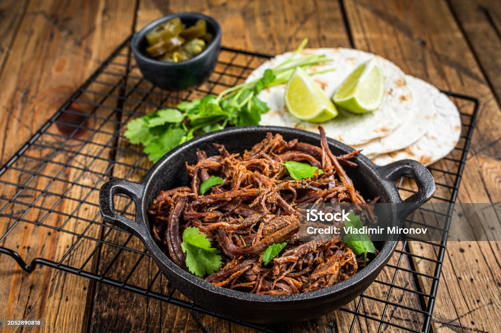

Home
Slow Cooker Carnitas

Carnitas are a delicious Mexican dish that the whole family will love. Not only that but this recipe is very easy to prepare. Just throw a few things in a slow cooker, wait a while and bam you have a delicious meal just like your Abuelita used to make.
Ingredients
- 4lb Pork Butt or Pork Shoulder
- Large White Onion (chopped)
- Large Orange
- Salt 1 TBS
- Black Pepper half a TBS
- Cumin 2 TBS
- Oregano 1 TBS
- Garlic 2 cloves
- Lime
Steps
- Step 1. Rub the pork with the cumin, oregano, black pepper, and salt
- Step 2. Put the pork into the slow cooker with the fat cap facing up.
- Step 3. Add the onion and garlic on top of the pork
- Step 4. Squeeze the orange and lime on the top of the pork.
- Step 5. Cook for 4 hours on high or 8 hours on low
- Step 6. Shred the pork. Now that its cooked it should be super soft and easy to pull apart.
- Step 7. ENJOY! If you want a more authentic vibe use some corn tortillas with some onion, cilantro, and lime. If you want a nachos throw some meat on a plate with some chips and shredded cheese. The possibilities are endless!